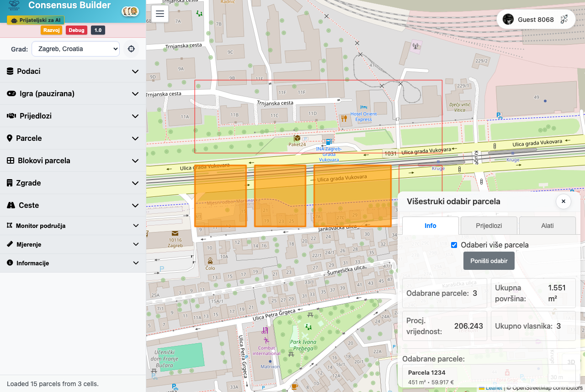
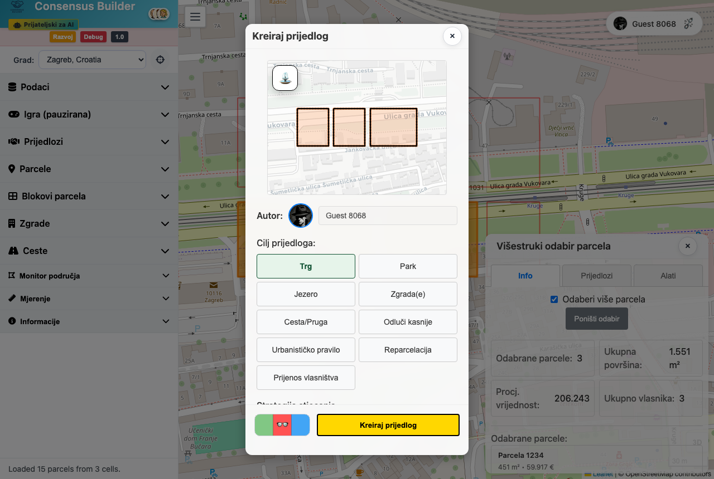
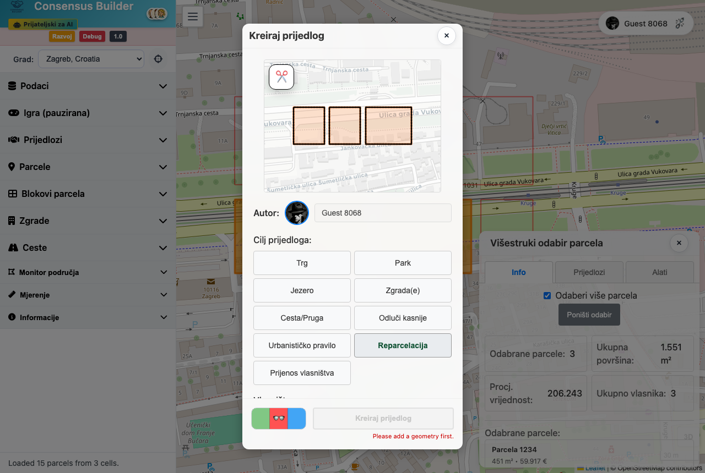
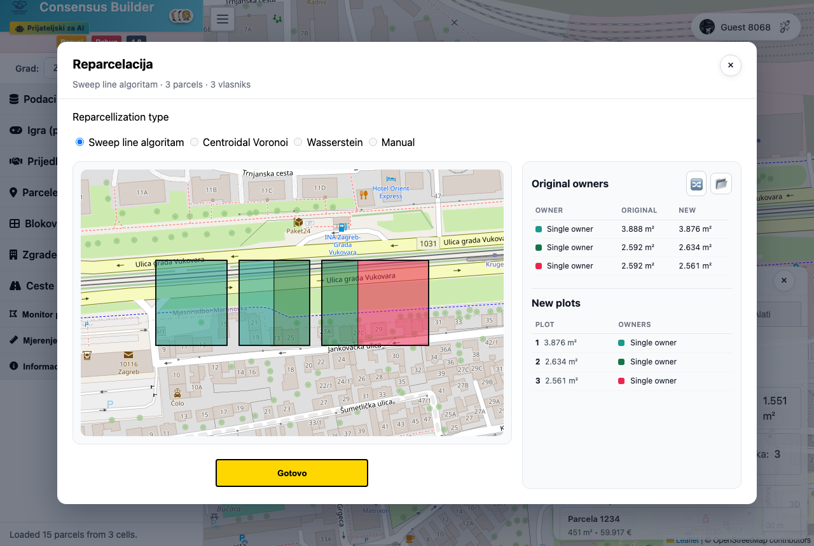

Prijedlog reparcelacije
Reparcelacija spaja odabrane parcele u jednu površinu i zatim je iznova dijeli na novi raspored parcela. Ne radi se o ručnom spajanju pa razdvajanju — odabereš parcele, odabereš Reparcelacija, a algoritam Sweep line automatski preraspodijeli granice. Ti pregledaš rezultat i potvrdiš.
-
Odaberi parcele na karti
Uključi višestruki odabir i izaberi parcele koje želiš iznova podijeliti. Ploča nosi naslov Višestruki odabir parcela, a odabrane su navedene pod Odabrane parcele:. Parcele moraju biti povezane — inače slanje ne uspijeva uz poruku „Parcele nisu povezane”.

Snimka zaslona uskoroVišestruki odabir povezanih parcela. -
Otvori prozor za izradu prijedloga
Klikni gumb Kreiraj prijedlog u odjeljku prijedloga. Otvara se prozor naslova Kreiraj prijedlog.

Snimka zaslona uskoroProzor „Kreiraj prijedlog”. -
Odaberi cilj: Reparcelacija
Pod Cilj prijedloga: klikni Reparcelacija. Time se odmah pokreće algoritam i otvara alat za reparcelaciju.

Snimka zaslona uskoroOdabir cilja „Reparcelacija”. -
(Po želji) postavi vlasništvo i algoritam
Pod Vlasništvo biraš Jedan vlasnik ili Više vlasnika. Način „Jedan vlasnik” otključava ručno određivanje smjera podjele u alatu.
Pod Algoritam: ponuđeni su Sweep line, Centroidal Voronoi, Wasserstein i Ručno, ali trenutno radi samo Sweep line (automatski odabran).
-
Pregledaj raspored u alatu za reparcelaciju
Otvara se alat naslova Reparcelacija; karta prikazuje novi raspored parcela. Kod uspjeha status glasi „Sweep line uspješno primijenjen. Pregledaj i klikni Gotovo za spremanje.” Boje vlasnika objašnjava Legenda vlasnika.
U ovom su alatu neke oznake još uvijek na engleskom: vrsta algoritma (Reparcellization type), te popisi Original owners (postojeći vlasnici) i New plots (nove parcele).
Snimka zaslona uskoroAlat za reparcelaciju s automatski generiranim rasporedom. -
(Samo „Jedan vlasnik”) ugodi podjelu
Vidiš Površina superparcele i Broj parcela. Pod Raspodjela biraš Jednako, Nasumično ili Ručno. Za smjer reza povuci liniju na karti — uputa glasi „Povuci liniju na karti kako bi odredio smjer podjele.”
-
Potvrdi raspored — klikni „Gotovo”
Klikni Gotovo. Novi raspored sprema se u prijedlog uz poruku „Raspored reparcelacije spremljen za ovaj prijedlog.”
Ovaj je korak obavezan. Preskočiš li Gotovo, slanje neće uspjeti: „Pokreni algoritam reparcelacije i klikni Gotovo prije kreiranja ovog prijedloga.” -
Popuni detalje prijedloga
U prozoru Kreiraj prijedlog dodaj Naziv:, Opis: i, po želji, Ponuda: (iznos). Pod Opcije: su uvjetnost, rok isteka, opadanje ponude i depozit. Sažetak prijedloga prikazuje odabrane parcele, ukupnu površinu i broj vlasnika.
-
Pošalji prijedlog
Klikni Kreiraj prijedlog. Tijekom izrade pokazuje Kreiram... (te Čekam transakciju... ako se kuje na lancu). Ako nedostaju podaci, javit će „Unesi autora, naziv i valjanu ponudu.”
 Snimka zaslona uskoro
Snimka zaslona uskoro
Stvoreni prijedlog reparcelacije.